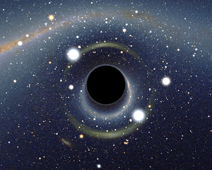
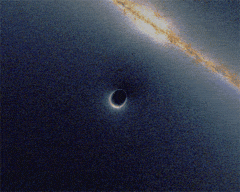

Black Holes (everything bolded is editable. Just hover over it to find out how!)
A black hole is a region of spacetime, from which gravity prevents anything, including light, from escaping. The theory of general relativity predicts that a sufficiently compact mass will deform spacetime to form a black hole. Around a black hole there is a mathematically defined surface called an event horizon that marks the point of no return. It is called "black" because it absorbs all the light that hits the horizon, reflecting nothing, just like a perfect black body in thermodynamics. Quantum field theory in curved spacetime predicts that event horizons emit radiation like a black body with a finite temperature. This temperature is inversely proportional to the mass of the black hole, making it difficult to observe this radiation for black holes of stellar mass or greater.
Objects whose gravity field is too strong for light to escape were first considered in the 18th century by John Michell and Pierre-Simon Laplace. The first modern solution of general relativity that would characterize a black hole was found by Karl Schwarzschild in 1916, although its interpretation as a region of space from which nothing can escape was not fully appreciated for another four decades. Long considered a mathematical curiosity, it was during the 1960s that theoretical work showed black holes were a generic prediction of general relativity. The discovery of neutron stars sparked interest in gravitationally collapsed compact objects as a possible astrophysical reality.
Black holes of stellar mass are expected to form when very massive stars collapse at the end of their life cycle. After a black hole has formed it can continue to grow by absorbing mass from its surroundings. By absorbing other stars and merging with other black holes, supermassive black holes of millions of solar masses may form. There is general consensus that supermassive black holes exist in the centers of most galaxies.
Despite its invisible interior, the presence of a black hole can be inferred through its interaction with other matter and with electromagnetic radiation such as light. Matter falling onto a black hole can form an accretion disk heated by friction, forming some of the brightest objects in the universe. If there are other stars orbiting a black hole, their orbit can be used to determine its mass and location. These data can be used to exclude possible alternatives (such as neutron stars). In this way, astronomers have identified numerous stellar black hole candidates in binary systems, and established that the core of our Milky Way galaxy contains a supermassive black hole of about 4.3 million solar masses.
PS. I think the author of the "Israel caused 9-11" is a jerk.